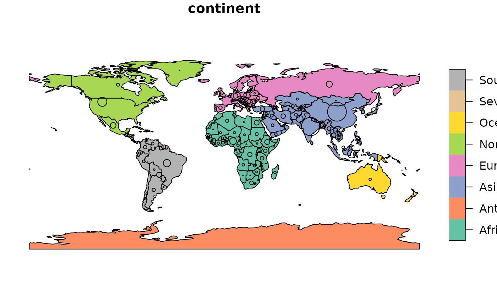
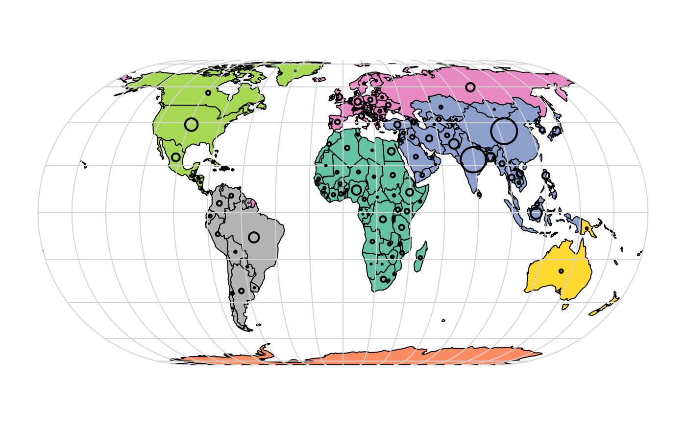
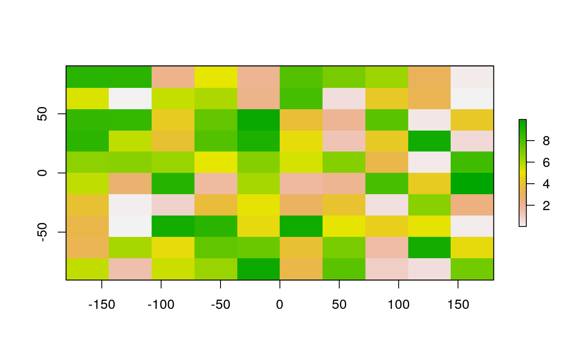

vignettes/solutions02.Rmd
solutions02.RmdThe solutions assume the following packages are attached (other packages will be attached when needed):
summary() on the geometry column of the world data object. What does the output tell us about:
MULTIPOLYGON, there are 177 countries and the coordinate reference system (CRS) is WGS84 (EPSG 4326)cex argument do (see ?plot)?cex set to the sqrt(world$pop) / 10000?The version generated by the code and the version in the book are shown in the left and right figures, respectively:
old_par = par() # save graphical parameters
# generate version based on code in the book
plot(world["continent"], reset = FALSE)
cex = sqrt(world$pop) / 10000
world_cents = st_centroid(world, of_largest = TRUE)
plot(st_geometry(world_cents), add = TRUE, cex = cex, reset = TRUE)
# generate version in the book from online script:
par(old_par)
s = "https://github.com/Robinlovelace/geocompr/raw/master/code/02-contpop.R"
source(s)
Similarities: global extent, colorscheme, size of circles
Differences: projection (Antarctica is much smaller for example), graticules, location of points in the countries.
To understand these differences read-over, run, and experiment with different argument values in this script: https://github.com/Robinlovelace/geocompr/raw/master/code/02-contpop.R
cex refers to the diameter of symbols plotted, as explained by the help page ?graphics::points. It is an acronym for ‘Chacter symbol EXpansion’. It was set to the square route of the population divided by 10,000 because a) otherwise the symbols would not fit on the map and b) to make circle area proportional to population.
plot() to create maps of Nigeria in context (see section https://geocompr.robinlovelace.net/spatial-class.html#basic-map).
nigeria = world[world$name_long == "Nigeria", ]
africa = world[world$continent == "Africa", ]
plot(st_geometry(nigeria), col = "white", lwd = 3, main = "Nigeria in context", border = "lightgrey", expandBB = c(0.5, 0.2, 0.5, 0.2))
plot(st_geometry(world), lty = 3, add = TRUE, border = "grey")
plot(st_geometry(nigeria), col = "yellow", add = TRUE, border = "darkgrey")
a = africa[grepl("Niger", africa$name_long), ]
ncentre = st_centroid(a)
ncentre_num = st_coordinates(ncentre)
text(x = ncentre_num[, 1], y = ncentre_num[, 2], labels = a$name_long)Map of Nigeria in context illustrating sf’s plotting capabilities
RasterLayer object called my_raster with 10 columns and 10 rows.Assign random values between 0 and 10 to the new raster and plot it.
set.seed(2018-09-03)
my_raster = raster(ncol = 10, nrow = 10, vals = runif(n = 100, min = 0, max = 10))
plot(my_raster)
raster/nlcd2011.tif file from the spDataLarge package. What kind of information can you get about the properties of this file?nlcd = raster(system.file("raster/nlcd2011.tif", package = "spDataLarge"))
nlcd
#> class : RasterLayer
#> dimensions : 1359, 1073, 1458207 (nrow, ncol, ncell)
#> resolution : 31.5303, 31.52466 (x, y)
#> extent : 301903.3, 335735.4, 4111244, 4154086 (xmin, xmax, ymin, ymax)
#> crs : +proj=utm +zone=12 +ellps=GRS80 +towgs84=0,0,0,0,0,0,0 +units=m +no_defs
#> source : /usr/local/lib/R/site-library/spDataLarge/raster/nlcd2011.tif
#> names : nlcd2011
#> values : 11, 95 (min, max)You can get information about:
nrow), a number of columns (ncol), a total number of cells (ncell)xmin, xmax, ymin, ymax
min and max